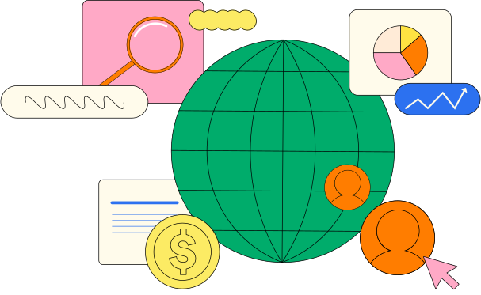

La inclusión laboral es un pilar fundamental dentro de toda estrategia de Recursos Humanos para potenciar los resultados. Va mucho más allá de la responsabilidad social. De hecho, es un componente imprescindible para el crecimiento sostenible a largo plazo.
Según investigaciones de ManpowerGroup, las organizaciones que tienen un equipo de liderazgo diverso son capaces de generar ingresos 25% más altos que quienes no lo tienen, al mismo tiempo que el desempeño de los empleados en organizaciones diversas es un 12% superior. Pero, ¿qué es la inclusión en las empresas? Este concepto hace referencia a la construcción de ambientes que valoran y respetan la diversidad en todas sus manifestaciones, tales como género, etnia, orientación sexual, habilidades y experiencias. No se trata simplemente de cumplir con cuotas de grupos sociales que estipula el marco legal, sino de construir culturas organizacionales que fomenten la igualdad de oportunidades y el respeto mutuo.
Por lo tanto, si reconoces y aprovechas las distintas perspectivas, experiencias y habilidades de los colaboradores, tu empresa puede generar innovación, mejorar la toma de decisiones y aumentar la adaptabilidad en un mercado globalizado. Aquí te contamos cómo hacerlo en Guatemala:
Qué es y por qué es importante la inclusión laboral en las empresas
La inclusión laboral se basa en el reconocimiento y la valoración de la diversidad en el lugar de trabajo, que puede incluir diferencias en términos de género, edad, raza, orientación sexual, habilidades y otras características individuales. En otras palabras, se refiere al proceso y la práctica de proporcionar igualdad de oportunidades y trato justo a todas las personas en el ámbito laboral, independientemente de sus diferencias o características. Esto implica eliminar barreras y prejuicios para garantizar que todas las personas puedan acceder al trabajo.
La diversidad e inclusión son fundamentales para el éxito de equipos que operan en un contexto global, y aquí te compartimos sus principales beneficios para tomar dimensión sobre eso:
Ambiente laboral positivo
La incorporación de estrategias inclusivas en las empresas de Guatemala ayuda a crear un entorno de trabajo en el que cada talento global se siente valorado y respetado. Por lo tanto, esta dinámica propicia la cooperación y el apoyo mutuo, construyendo relaciones sólidas entre equipos y mejorando la calidad de vida laboral. En consecuencia, la satisfacción de los empleados se incrementa, así como también se reduce el estrés y se construye un ambiente de trabajo feliz.
Acceso a mercados diversificados
La capacidad de adaptarse a diferentes mercados no solo se traduce en una reducción de riesgos asociados con la uniformidad, también genera oportunidades para el crecimiento económico. La incorporación de perspectivas diversas en los procesos de diseño, marketing y toma de decisiones estratégicas permite a las empresas inclusivas anticipar tendencias y satisfacer las demandas emergentes de mercados dinámicos. Asimismo, la comprensión sobre las particularidades de cada mercado objetivo permite a las organizaciones guatemaltecas posicionarse como proveedores de calidad y comprometidas con el respeto de las diversas culturas con las que se relacionan. Por lo tanto, si contratas talento de diversos países, como El Salvador, el Caribe, México y Estados Unidos puedes nutrirte de visiones únicas para el desarrollo de tu negocio.
Fortalecimiento de la reputación empresarial
Sí, también tiene consecuencias en la imagen de la marca empleadora de las empresas en Guatemala. De esta forma, el hecho de comprometerse con prácticas inclusivas fortalece la reputación como empleador ético y atractivo. Porque mejora la percepción de los productos o servicios, especialmente en aquellos clientes que valoran la diversidad.
Innovación y creatividad
Pero la diversidad en el lugar de trabajo no sólo enriquece el ambiente y fomenta un clima laboral positivo, da lugar a más innovación y creatividad al enfrentar nuevos retos y proponer soluciones. Por eso, la combinación de perspectivas y enfoques diversos permite abordar los desafíos actuales y futuros de manera única. Incluir voces diversas en la toma de decisiones posiciona a las empresas guatemaltecas de manera más sólida en el mercado, proporcionándoles una ventaja competitiva inigualable al tener una gran capacidad para generar ideas originales.
Encuentra aquí estadísticas, datos y orientación sobre la contratación global, cómo resolver la crisis de habilidades y alcanzar el máximo potencial.


Mejores niveles de retención y desempeño laboral
Las estrategias de diversidad tienen impactos directos en indicadores como la tasa de rotación de personal y los niveles de desempeño de los empleados, debido a que los colaboradores que se sienten aceptados y valorados son más propensos a comprometerse a largo plazo. Por consiguiente, esto favorece al máximo potencial de la empresa. El aumento de la productividad se logra al motivar a los trabajadores para que ofrezcan lo mejor de sí mismos y colaboren en la consecución de los objetivos empresariales.
Más posibilidades de tener un entorno colaborativo
Si estás considerando dar tus primeros pasos para expandir tu empresa en América Latina, tienes que saber que la inclusión en el lugar de trabajo amplía la gama de experiencias y antecedentes. Esto fomenta los debates constructivos y enriquecedores sobre cómo optimizar los procesos internos o resolver un determinado problema que pueda presentarse. De esta forma, la diversidad de conocimientos derivados de distintos orígenes culturales y vivencias contribuye a la comprensión y empatía entre los empleados. En otras palabras, se trata de un escenario que da lugar a un entorno colaborativo inigualable y excepcional para el desarrollo de las habilidades de los talentos y la obtención de resultados positivos en los proyectos empresariales.
Estrategias de inclusión para empresas en Guatemala
Revisa estas sugerencias:
Reformas políticas internas
La implementación de esta estrategia representa un primer paso fundamental para fomentar la inclusión en las empresas guatemaltecas, ya que estos cambios pueden sentar las bases para un entorno empresarial más equitativo y diverso. A continuación, te compartimos posibles reformas y cambios regulatorios que podrían impulsar la inclusión en tu organización:
- Cuotas de representación interna: establecer metas específicas para la representación de género, etnia y otras dimensiones de diversidad en los niveles ejecutivos y de liderazgo. Por ejemplo, asegurar que al menos el 30% de los puestos directivos sean ocupados por mujeres y que exista una representación equitativa de diversas identidades étnicas.
- Incentivos: implementar incentivos internos que reconozcan y recompensen a equipos y líderes que promuevan activamente la diversidad y la inclusión. Por ejemplo, programas de reconocimiento, bonificaciones o ascensos basados en el compromiso demostrado con la inclusión.
- Estudio de las barreras de acceso: realizar evaluaciones internas para identificar y abordar posibles barreras de acceso dentro de la empresa. Esto podría incluir la revisión de políticas de contratación, promoción y desarrollo profesional para garantizar que sean inclusivas y libres de sesgos.
- Equidad salarial y transparencia: incorporar medidas que ayuden a mantener la equidad salarial, como la realización de auditorías periódicas en este sentido o brindar acceso transparente a la información sobre la estructuras salariales internas. Estas prácticas contribuyen a la eliminación de las disparidades en la remuneración basadas en género, etnia u otros factores.
- Flexibilidad: fomentar una cultura flexible para trabajar es clave, con horarios que puedan administrarse por cuenta propia, opciones de trabajo remoto y posibilidad de tomarse días libres adicionales a los que estipula la ley local para el cuidado de la salud mental y el bienestar integral.
Contratación global
Ampliar la estrategia de inclusión mediante la contratación de empleados de diferentes partes del mundo representa una valiosa iniciativa para las empresas en Guatemala. Este enfoque no solo busca fortalecer la diversidad cultural dentro de la organización, sino que también busca aprovechar las oportunidades que ofrece la incorporación de talento internacional.

- Enriquecimiento de la diversidad cultural: La contratación global añade una capa adicional de diversidad cultural a la empresa, lo cual no solo enriquece el entorno laboral, sino que también crea un ambiente propicio para el intercambio de ideas, valores y prácticas laborales provenientes de diversas partes del mundo.
- Variedad de perspectivas: La presencia de empleados de diferentes orígenes culturales proporciona una riqueza de perspectivas que puede ser beneficiosa para la toma de decisiones estratégicas y el abordaje de desafíos empresariales. Esta diversidad de puntos de vista contribuye a la innovación y a la resolución creativa de problemas.
- Habilidades únicas y experiencias internacionales: La contratación global no solo aporta diversidad cultural, sino que también introduce una variedad de habilidades y experiencias únicas. Los empleados internacionales pueden traer consigo conocimientos específicos del mercado, competencias lingüísticas, y una comprensión más profunda de las dinámicas globales que son esenciales en un mundo empresarial cada vez más interconectado.
Explora cómo puedes atraer al mejor talento de todo el mundo con Deel


- Ampliación del alcance global de la empresa: Contar con un equipo diverso geográficamente permite a la empresa expandir su alcance global. Los empleados con experiencias internacionales pueden facilitar la entrada a nuevos mercados, comprender mejor las tendencias globales y fortalecer las relaciones con clientes y socios comerciales en diferentes regiones.
- Desarrollo de una cultura de aceptación y respeto: La contratación global promueve una cultura organizacional que valora la aceptación y el respeto hacia la diversidad. Este compromiso con la inclusión no solo se limita a la diversidad cultural, sino que también se extiende a la apreciación de las diferencias individuales que cada empleado aporta al equipo.
Capacitación y educación
Sí, la adhesión de la estrategia de capacitación y educación adecuada a todos los niveles de una organización del sector privado puede ayudar a crear un entorno de trabajo más inclusivo. Desde líderes de nivel C hasta empleados de base, la formación adecuada desempeña un papel esencial en la creación de una cultura que valore la diversidad y la inclusión. Veamos algunos ejemplos:
- Líderes de nivel C y alta dirección: para ellos, la capacitación podría centrarse en la sensibilización estratégica sobre la importancia de la diversidad y la inclusión en la toma de decisiones empresariales. Así, se podrían desarrollar programas ejecutivos que aborden cómo la diversidad impulsa la innovación y el rendimiento financiero, vinculando directamente la inclusión con el éxito organizacional.
- Gerentes y supervisores intermedios: la formación de gerentes para liderar equipos remotos diversos puede hacerse en base al hecho de resaltar la importancia de la adaptabilidad y comunicación efectiva. Por ejemplo, talleres prácticos sobre técnicas de gestión de equipos virtuales, abordando desafíos específicos relacionados con la diversidad.
- Colaboradores de base y equipos operativos: el desarrollo de habilidades de comunicación inclusiva es un buen punto de partida con este grupo de empleados. Por ejemplo, a través de seminarias sobre el uso del lenguaje inclusivo y la importancia de la escucha activa en entornos virtuales, pueden fortalecerse estas habilidades blandas.
Participación comunitaria
Las empresas pueden interactuar y colaborar con la comunidad local para fomentar una mayor inclusión. ¿De qué manera? Descubre estos casos:
- Colaboración con instituciones educativas locales: el establecimiento de programas de tutoría remota para estudiantes de instituciones educativas locales puede ser una buena idea para lograrlo. Por medio de esta colaboración, los empleados pueden ofrecer orientación y apoyo en quienes están interesados en carreras vinculadas con la industria. También, es una oportunidad para que las empresas de servicios financieros a nivel nacional puedan implementar buenas prácticas como las relacionadas a la educación financiera y la explicación sobre los fundamentos básicos del sistema financiero en general, más allá de la estrategia nacional de inclusión financiera llevada adelante por instituciones públicas.
- Iniciativas de desarrollo económico local: el apoyo a emprendedores locales (como pequeñas y medianas empresas) por medio de mentorías y capacitación en habilidades empresariales es clave para compartir conocimientos y recursos. Esto fortalece la base empresarial local y contribuye a los objetivos de desarrollo sostenible a largo plazo. Por ejemplo, para el desarrollo rural.
- Programas de inclusión digital: la colaboración con organizaciones locales para proporcionar acceso a recursos digitales y habilidades tecnológicas relacionadas es un claro ejemplo de esta estrategia de inclusión empresarial. Puede hacerse con la donación de implementos informáticos, la coordinación de talleres sobre el ABC digital o el apoyo a la conectividad para mejorar el acceso a Internet de la población guatemalteca.
A propósito, te compartimos dos guías que pueden resultar de ayuda:
Cómo Cloud9 contrató a 223 trabajadores independientes en 21 países diferentes a través de Deel
La simplicidad, facilidad de uso y efectividad de Deel han sido elementos clave en la integración de 223 trabajadores independientes de Cloud9, distribuidos en 21 países diferentes. La plataforma Deel se convierte en su aliado fundamental para contratar con agilidad en aspectos de nómina, recursos humanos, aspectos legales, y mucho más. Desde creadores de contenido a nivel global hasta empleados locales que respaldan las competencias, Cloud9 ha centralizado todo su proceso, perfeccionando así su enfoque en el proceso de incorporación.
En el año 2022, Cloud9 tenía el objetivo de expandirse aún más, y Deel se presentó como la plataforma ideal para alcanzar sus metas. En lugar de invertir tiempo y recursos en trasladar equipos a cada ubicación de competencia, ahora tienen la capacidad de contratar creadores de contenido o equipos de marketing locales con facilidad. Deel ha agilizado su proceso de contratación, permitiéndoles focalizarse en estrategias que potencien aún más su organización. La flexibilidad global proporcionada por Deel les ha permitido atender a sus audiencias y generar contenido de manera efectiva, independientemente del lugar donde compitan sus equipos.
Deel es payroll y compliance creado para la fuerza laboral mundial. Empieza a contratar hoy, donde quieras.


Deel, tu aliado para facilitar la inclusión global
Deel ayuda a miles de empresas a expandirse a nivel mundial con una velocidad y flexibilidad inigualables. Contratación global, RR.HH. y nómina en un solo sistema. Hacemos que la administración global de equipos sea tan sencilla que las empresas no tengan que dudar ni por un momento. Si buscas contratar trabajadores independientes y empleados en todo el mundo sin la necesidad de establecer entidades legales, optimizar los recursos humanos para tu equipo global o unificar la nómina de todos, Deel se encarga de todo (garantizando al mismo tiempo el cumplimiento de las normativas laborales).
¿Quieres expandir tu equipo globalmente? Elige una solución de RR. HH. para todo lo que necesitas, para todos. ¡Solicita tu demo ahora!
¡Estamos más cerca de ti! Ahora nuestro equipo de Sales resuelve tus dudas directamente desde WhatsApp


.svg)